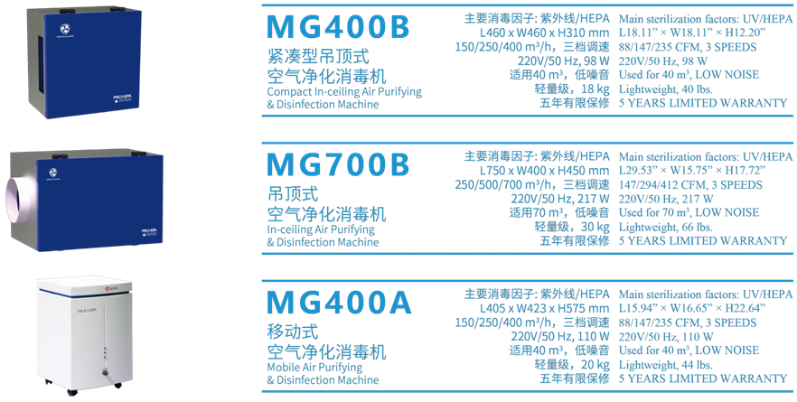

每个孩子生来与众不同
你真的了解自己的孩子有哪些不同吗？
教育不能输在起跑线，他在起跑线什么位置？
他究竟在哪些方面有优势？
他在娘胎里时，性格就这样了....
隐藏在基因里的秘密
孩子的日常表现取决于他的生活环境、情绪和行为—这些都受他的DNA的影响。
因为基因的差异，每个孩子都会有这样或那样的先天倾向，并且强弱不同。
这些潜能优势是由多个基因决定的，包括科学研究已经发现的认知、记忆、思维、音乐、性格等相关的基因。
迈因特（MIT）基因分析与潜能优势解读，简称：天赋基因
潜能基因 +良好行为特征 +适宜环境 =更好的自己
产品描述：
1通过DNA检测技术，了解孩子携带的遗传信息，解读个体的先天倾向。
2结合教育学和心理学多维分析，全面评价孩子的潜能优势和性格特征。
3提供全方位的教育和培养建议，帮助家长在孩子潜能开发的最佳时间及时把握后天培养计划，帮助孩子更好地成长。
产品价格：￥4999/例

基因科技融合教育心理学为儿童教育培养全面指导
应用场景
-
优势教育
探索自身学习能力特质
个性化设计教育
模式提高教育效率
-
潜能开发
挖掘个人潜在能力
取长补短
充分发挥内在优势
-
情商培养
了解先天情志特征
后天针对性培养
提高个人情商
-
职业规划
发现个体职业素质
科学精准自我定位
选择时配专业
检测内容
4层建构
 学习机能(6项)
学习机能(6项)
学习能力(7项)
 智能优势(8项)
智能优势(8项)
 情商潜质(5项)
情商潜质(5项)
26项指标
视觉、听觉、注意、记忆、语言、运动
注意力、记忆力、理解力、计算力、推理力、表达力、创造力
语言、逻辑数学、空间、身体运动、音乐、人际、自然认知、自我认知
行动果敢性、自我驱策性、开放创造性、团队配合性、情绪稳定性
50个维度101个项目
优势对比
升级版
在生物芯片(上海)国家工程研究中心原研“优势潜能”基础上经过3次升级
根据GWAS原理进行Meta分析，检索文献超1万篇，深度追踪6000篇，引用文献1000篇
检测东亚人群潜能优势密切相关的SNP位点，基于OQ值和RR值，独创东亚人群多基因算法模型
结合教育学和心理学进行多维度分析，提供全方位的培养和教育建议
旧版
数据较多来源于2010年前，受技术及分析能力的限制
缺乏个性化分析和指导
缺少教育学和心理学分析
更多产品
-
IngeniSeq®伯豪迅敏康病原体微生物宏基因组检测
DNA病原体微生物宏基因组检测：3800元/样本
6DNA+RNA病原体微生物宏基因组检测：6800元/样本
-
IOrkan（Medical Guard）医用空气消毒机测
MG400A型：￥100,000/台
6MG700B型：￥600,000/台
-
免疫图谱分析
免疫图谱分析：6000元/人
-
结核杆菌耐药全基因组测序
结核杆菌耐药全基因组测序：5600元/样本
IngeniSeq®伯豪迅敏康病原体微生物宏基因组检测
产品简介
病原体微生物宏基因组检测基于测序技术的临床宏基因组学，通过分析临床标本中的DNA或RNA含量与丰度判断致病菌。可直接从临床样品中提取全部微生 物的DNA, 利用基因组学的研究策略研究样品所包含的全部微生物的遗传组成 及其群落功能。
该项技术显著提高了病原检测的敏感度，缩短了检测时间，对罕见病原菌感染的诊断具有优势。可用于现有检测技术不能确定的病原体，或经抗感染治疗无效的患者。
产品特点
1准确鉴别超过20000种病原体，帮助临床快速诊断感染性疾病。独特的“胜利者”生信分析系统，数据更全面，分析更准确。
2可分析常见病原体耐药基因位点，在检出病原体同时帮助临床选择合理的治疗药物。
产品价格：
DNA病原体微生物宏基因组检测：3800元/样本
DNA+RNA病原体微生物宏基因组检测：6800元/样本

Orkan（Medical Guard）医用空气消毒机

产品简介
Orkan（Medical Guard）医用空气动态消毒机具备核级高效空气过滤器（材料满足美国ASME AG-1B-2011核气体处理规范），可长效用于医疗封闭、半封闭环境，室内的工作环境等场所。
Orkan医用空气消毒机源于军用技术，经过严苛的可靠性测试。最初为美国军方研发，为防核爆炸产生的辐射粉尘，配备于坦克及核实验室中，以防核辐射扩散。纯物理过滤方式，不产生任何二次污染（如臭氧、挥发性有机化合物等），不含任何释放有害气体的胶黏剂和化学物质，不使用任何化学抗菌材料，特别是致癌物质OIT（Octylisothiazolinone，辛基异噻唑啉酮）。
国内多家大型医疗机构，高档商务中心均有安装配备。（北京小汤山医用、西安交通大学附属第一医院、郑州人民医院、北京嘉里中心、广州和睦家医院等等）
产品特点
1专利密封过滤技术（发明专利号：CN201910927425.X），确保机器对0.3μm颗粒物单次过滤效率>99.97%的基础上，过滤效率在使用寿命内不会有性能衰减，使细菌、病毒等微生物和尘埃粒子被拦截而无法泄露，可以有效控制X射线辐射等室内污染物的浓度。
2核级HEPA物理过滤 + UV-C紫外杀菌双重净化消毒技术，在消毒的同时，保证室内的颗粒物维持在最低浓度，远低于限值。在根源上去除X射线辐射和细菌、病毒等微生物滋生的条件，有效降低院感率。
产品价格：
MG400A型（移动式空气净化消毒机）：￥100,000/台
MG700B型（吊顶式空气净化消毒机）：￥600,000/台
免疫图谱分析
产品简介
当人体处于疾病或亚健康状态下，免疫系统（特别是重要的免疫细胞——T细胞）的状态会发生巨大的变化，是的免疫功能大幅下降。此时免疫系统功能会发生巨大变化，出现对外来病原的精细识别能力降低，免疫应答紊乱、低效甚至无效，使免疫系统的三大功能（防御、监视、稳定）失调或减弱，最终导致感染性疾病、自身免疫性疾病及癌症的发生率明显增加。因此，了解自身免疫系统和健康状态十分重要。
免疫图谱分析是利用高通量测序技术来分析人的外周血或组织中B细胞的BCR序列或者T细胞的TCR序列，对疾病进行早期诊断筛查。
人体内的B和T淋巴细胞是获得性免疫系统中两类重要的细胞。通过高通量基因测序的方法来分析BCR或者TCR基因的免疫图谱，可以分析B或者T细胞的功能。
在儿童、患有长期慢性感染的病人或者老年人中，BCR 和 TCR 基因多样性也可能发生改变。因此，利用BCR和TCR免疫图谱分析，可以用来评估受试者的免疫力。 免疫图谱分析目前还只能作为技术服务手段帮助医生和客户发现免疫系统的异常，但还不能作为疾病的诊断标准。
产品价格：
免疫图谱分析：6000元/人
结核杆菌耐药全基因组测序

产品简介
全球有20亿人感染结核分枝杆菌—MTB，每年有860万人发生急性肺结核（TB），130万人死于该病。结核病是仅次于HIV的传染病，是人类死亡最多的传染病。1/3的艾滋病患者也感染了肺结核。活性MTB是一种高度传染性的空气传播疾病，主要为肺部感染。耐多药结核病诊断进展缓慢，患病的病人中只有五分之一得到诊断。
高通量测序通过检测结核杆菌耐药的全基因组，深入分析个体耐药机制和耐药情况，达到快速诊断、精准治疗的目的。
与传统耐药检测手段相比、高通量测序具有以下的特性：
1在2周内完成MDR/XDR-TB的诊断药敏并指导设计合理的治疗方案。
2不依赖探针的诊断，其它分子诊断技术在靶标缺失时或靶标有混合时检测失败。
3检测全面，内容包含所有其它分子诊断技术的结果。
4同时检测二线药物的耐药。
5可鉴定异质性耐药，不同亚型的混合感染。
6分枝杆菌生长缓慢，完整的表型药敏检测会消耗大量的资源（设备、人力等），WGS检测通量足够大，在输出全面的检测结果同时节约大量的实验室设备及人力资源。
7患者病情的复发，“二次感染”及“旧病复发”的区分鉴定。
产品价格：
结核杆菌耐药全基因组测序：5600元/样本
生物芯片上海国家工程研究中心
广州市云量医药咨询有限公司
权威指导
伯豪医学检验&观赋教育科技
联合出品

广州市云量医药咨询有限公司
客服热线：3316056611 传真电话：13316056611
电子邮箱：549458502@qq.com 官网地址：www.verlantum.cn
联系地址：广东省广州市天河区马场路28号之一702房
Copyright verlantum.cn 2020 all right reserved 备案号:粤ICP备20003000号